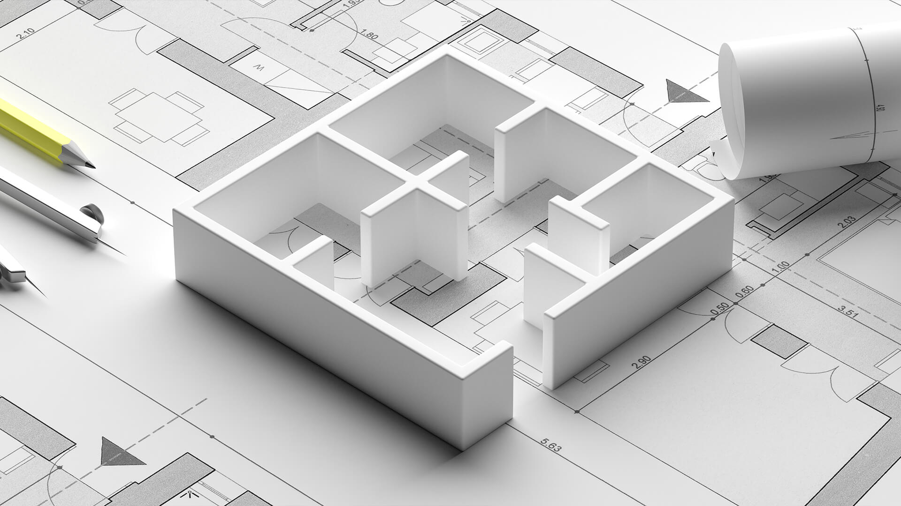

The faculty comprises of Music & Dance and Visual Arts. Each of these departments offers Bachelor's and Master's programmes:
The uniqueness of Panchmukhi Shiksha Programme of Banasthali University is refeected in the inclusion of the aesthetic dimension in its mission statement.
| Established in 1943, The department of Music has been one of the oldest departments of Banasthali . It has the honor of having great personalities as its architects such as Raja Bhiya Poonchwale, S.C.E.R. Bhatt, Pt. Vinayak Rao Patwardhan and Narayan Rao Vyas. The department was the first to start M.A. Music (Vocal and Instrumental) under the headship of Prof. B.R. Deodhar and later the personalities like P.N. Chichore and N.V. Patwardhan have headed the department. |
|---|
| Textile Designing was first introduced as a subject in Bachelor's programme of Banasthali University. Thereafter a Post Graduate diploma was started. Increasing demand and popularity of the subject led the Vidyapith to start the postgraduate programme M.A. (Textile Designing) in the year 2005. |
|---|
| “Art is a unique mode of expressing a cultured way of life. The experience of joy related to the visible or invisible physical or astral body or sentiments being in real form, appear before human beings in expressive forms. That expression is termed art.” - Prof. Aditya Shastri |
|---|
| Banasthali Vidyapith has been serving the democratic society for many decades by producing women icons in politics, administration and legislature. Media is the fourth pillar of the democracy and the Vidyapith intend to strengthen the pillar by creating women professionals with ethical values who could lead the existing and emerging media society. |
|---|
|  | “The School of Architecture also offers a wide range of elective courses in the field of applied and fine arts, technology, project management, structural systems, green buildings & rating systems, the latest software used in the Architecture & Planning field, sustainability, conservation, advance construction techniques, etc, in keeping with the need of the hour. |
|---|